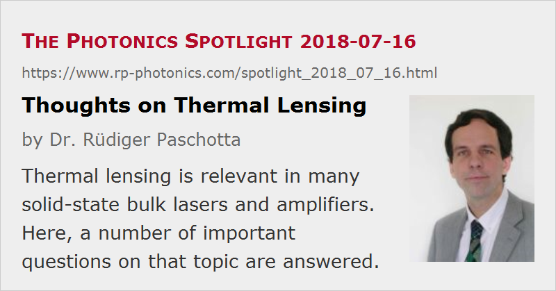

Thoughts on Thermal Lensing
Posted on 2018-07-16 as a part of the Photonics Spotlight (available as e-mail newsletter!)
Permanent link: https://www.rp-photonics.com/spotlight_2018_07_16.html
Author: Dr. Rüdiger Paschotta, RP Photonics Consulting GmbH
Abstract: Thermal lensing is relevant in many solid-state bulk lasers and amplifiers. Here, a number of important questions on that topic are answered.

Thermal lensing is an effect occurring in laser gain media, which is relevant in many devices such as solid-state bulk lasers and amplifiers – particularly for operation at higher power levels. In many cases, it crucially limits the possible performance of such devices in terms of output power and beam quality.
In the following, I present a number of frequently encountered questions and hopefully useful answers to those.
Where does thermal lensing come from?
In a solid-state lasers, for example, thermal lensing can arise from three different effects, which are all caused by the heating and the resulting inhomogeneous temperature distribution in the laser crystal:
- The refractive index is temperature-dependent. As a result, the laser beam experiences a higher phase shift on the beam axis, compared with the outer parts - just as for a normal lens.
- The crystal obtains some internal mechanical stress, which also changes its optical properties.
- In addition, the stress deforms the crystal, and in particular it can bulge the end faces.
Can it be calculated?
Yes, but unfortunately it is often difficult to get accurate results – mostly for those reasons:
- Except for the most common laser crystal materials, the required material data may be unknown.
- Calculating the three-dimensional temperature and stress distributions for the given boundary conditions (e.g. how exactly you cool and mount the crystal) requires complicated numerical code, an awkward set of user inputs, and often substantial computation time.
Fortunately, certain simplifications are in many cases quite reasonable and can substantially reduce the required effort. For example, the direct temperature effect on the refractive index (see above) is often dominant, so that one can neglect the other two effects, and in many cases we have an approximately radial heat flow, so that the temperature distribution can be calculated conveniently and quickly with a simple set of differential equations.
Can it be measured?
Yes, but this is also not trivial. Some people are sending a weak test laser beam through the gain medium and perform e.g. some wavefront analysis on that, but as the actual strong signal beam can substantially modify the temporal distribution, that should also be around during the measurement – which is tricky to do. There are various other methods, e.g. based on the measurement of mode properties, often requiring a specially designed laser resonator just for that test. Normally, it takes substantial expertise to measure the strength of the thermal lens accurately.
On the other hand, not knowing the strengths of your thermal lens means that you are fishing in the dark. You better have some reasonable quantitative understanding already in the planning phase, if thermal lensing must be expected be significant.
Is it always a focusing lens?
In most cases it is, but not always:
- The are laser gain media (particularly gasses) having a negative dn/dT, which may lead to a defocusing thermal lens, if the focusing stress effects are not stronger.
- Even for media with positive dn/dT, the thermal lens is normally defocusing outside the pump and laser beam (which may not matter).
Can it be reduced by using a larger pump beam?
If you increase the area of the pump beam of an end-pumped laser, the thermal lens indeed gets weaker. However, if you then need to increase the laser mode size (e.g. in order to maintain diffraction-limited beam quality), the larger laser mode gets more sensitive to lensing – and in the end your modification does not help you. By the way, the reduced pump intensity would also decrease the available laser gain.
Is it reduced by effective cooling?
As long as dn/dT is constant, cooling does not help, because the lensing is generated not by the temperature as such, but by temperature gradients. For operation at really low (cryogenic) temperatures – e.g., for cooling with liquid nitrogen – dn/dT is often reduced substantially, and thermal lensing indeed gets weaker accordingly.
Other ways to reduce it?
A powerful method of reducing thermal lensing is to use a laser geometry where you largely avoid heat flow in the direction perpendicular to the laser beam. That principle is applied in thin-disk lasers. Interestingly, the thermal lens in a thin-disk laser is not that weak for a device operating at a low power level, but the scaling properties are very much more benign than for conventional laser geometries: the challenge from thermal lensing does not become substantially stronger as you scale up the power. Therefore, such lasers can be made to operate at very high power levels with excellent beam quality.
Can we avoid aberrations of the thermal lens?
In principle, one may avoid optical aberrations of the thermal lens by arranging for a homogeneous heat generation density. That may be achieved with a top-hat pump beam (or with side pumping), provided that the influence of the laser beam does not make it inhomogeneous again.
Unfortunately, a top-hat pump beam is often not good in terms of conversion efficiency, while a Gaussian pump beam, for example, leads to stronger aberrations, which can eventually deteriorate the laser beam quality. At high power levels, some compromise is often unavoidable.
Is thermal lensing weaker in long crystals?
If you use a laser crystal of twice the length and with half the doping concentration, you can spread out the thermal lens over twice the length. The required higher pump beam quality may be an issue, though. More importantly, the total dioptric power of the thermal lens is not reduced – it is just spread out.
Can it help to use several laser crystals?
Yes: if each laser crystal needs to convert only part of the laser power, the overall challenge of thermal lensing can be substantially reduced – provided that you use a clever resonator design of your laser resonator. For example, there are so-called periodic resonators.
Is it weaker in fibers?
It is often said that fiber lasers have weak thermal lensing effects because the heat generation is distributed over a substantial length. As explained above, that reasoning is actually wrong. The overall strength of the thermal lens over the whole fiber length can be rather strong, only it usually cannot hurt you much in a fiber device. Ideally, you have a single-mode fiber where thermal lensing cannot do more than slightly shrinking the fiber mode. At kilowatt power levels, however, things get difficult also in fibers; thermal lensing is then one of several challenges – but usually not the worst one.
This article is a posting of the Photonics Spotlight, authored by Dr. Rüdiger Paschotta. You may link to this page and cite it, because its location is permanent. See also the RP Photonics Encyclopedia.
Note that you can also receive the articles in the form of a newsletter or with an RSS feed.
Questions and Comments from Users
Here you can submit questions and comments. As far as they get accepted by the author, they will appear above this paragraph together with the author’s answer. The author will decide on acceptance based on certain criteria. Essentially, the issue must be of sufficiently broad interest.
Please do not enter personal data here; we would otherwise delete it soon. (See also our privacy declaration.) If you wish to receive personal feedback or consultancy from the author, please contact him e.g. via e-mail.
By submitting the information, you give your consent to the potential publication of your inputs on our website according to our rules. (If you later retract your consent, we will delete those inputs.) As your inputs are first reviewed by the author, they may be published with some delay.
|  |
If you like this page, please share the link with your friends and colleagues, e.g. via social media:
These sharing buttons are implemented in a privacy-friendly way!